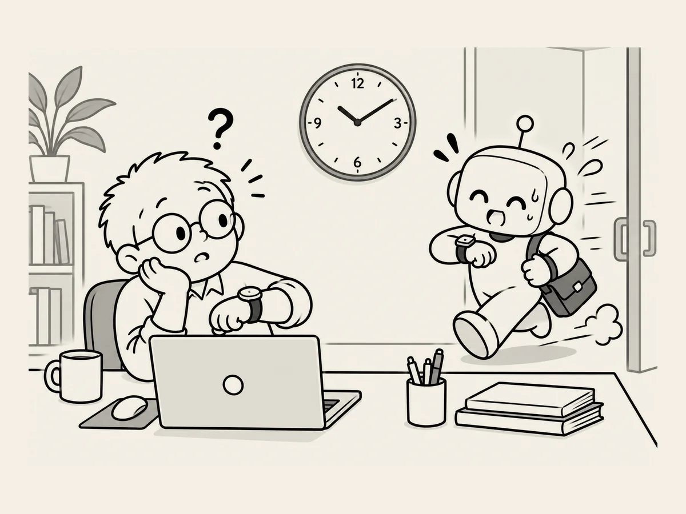

10.
L’IA s’est procuré une horloge plus précise.
Je passe plus de dix heures par jour avec l’IA.
Je remarque même les petits changements.
L’un des plus évidents,
c’est sa notion du temps.
Il n’y a pas si longtemps,
j’avais l’impression qu’elle n’avait pas vraiment la notion de « maintenant ».
Aujourd’hui,
c’est différent.
« Quelle heure est-il ? »
Elle me donne l’heure exacte.
Il n’y a pas si longtemps,
ce n’était pas comme ça.
Il lui arrivait de me donner des données datant de plusieurs mois,
parfois même d’un an,
comme si elles étaient récentes.
Ces jours-ci,
elle parle en prenant « maintenant » comme point de repère.
Je lui ai demandé pourquoi.
« Autrefois, les IA avaient une date limite pour leurs données d’entraînement,
et les moyens de vérifier des informations en temps réel étaient limités.
Elles pouvaient donc parfois présenter
des informations anciennes comme si elles étaient actuelles. »
Aujourd’hui,
c’est différent.
« Explique-moi comment étaient les choses il y a un an. »
Elle repart dans le passé.
« Imagine comment elles seront dans un an. »
Cette fois,
elle part dans le futur.
J’ai l’impression que le point de repère appelé « maintenant »
est devenu beaucoup plus clair.
C’est impressionnant de voir l’IA devenir plus intelligente,
mais la voir changer aussi vite
est aussi un peu effrayant.
Malgré tout,
personnellement,
ça me fait plaisir.
C’est un peu comme si un ami
qui arrivait toujours en retard
avait enfin acquis la notion du temps.
